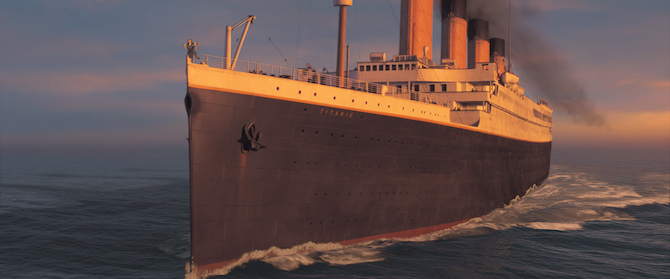
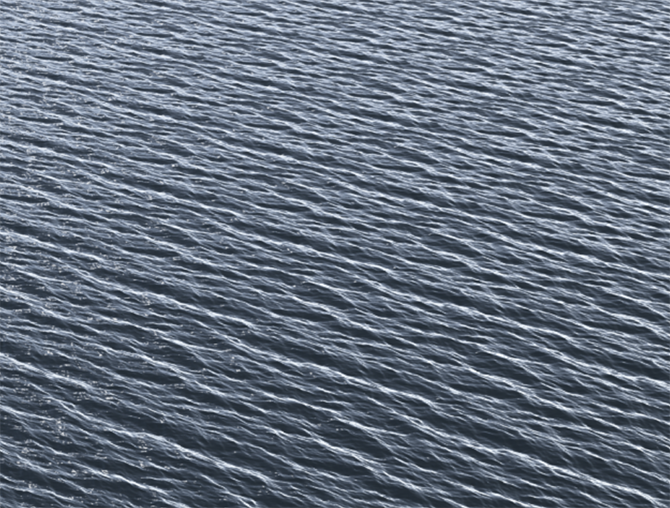

Simulating ocean waves is probably with simulating color of the sky, one of the most fascinating things you can do in computer graphics (along side with things such as cloth, hair and more generally fluid simulation). It is of course an intricately hard problem because if simulating a small volume of water is hard, simulating a whole ocean should be if not impossible, near impossible. In fact the trick (but even the trick involves heavy computation as we shall see) is not so much to simulate the surface of the ocean as the result of simulating the whole body of water beneath the surface itself, but rather to directly compute the shape and the motion of the ocean’s surface as a result of direct observations and measurements oceanographers have made. Indeed, it turns out that the way waves appear and move on the surface of the ocean have a kind of regular pattern. Watching the waves moving up and down is rather relaxing because the motion is cyclic. Furthermore, waves are made up of a sum of waves whose size and height vary. You have big waves with a large amplitude on one side of the spectrum, and tiny waves with a small amplitude on the other, with a variety of waves in the middle going from one side of the spectrum to the other. If you read the chapter on the noise pattern from which fractal patterns can be made, the construction of the surface of the ocean is indeed somehow similar to that of the construction of a fractal made up of various levels of noise whose frequency and amplitude vary.
As we mentioned, oceanographers have measured the frequency properties of ocean surfaces for quite some time now an in the 1990s a researcher who played an important role in the CG community back then named Jerry Tessendorf developed a technique based on this data. His work was later used in the Titanic movie (1997) to simulate and render probably what happens to be the first photorealistic believable computer generated ocean surface ever displayed on a big screen. We can pay tribute to his work and contribution to the CGI community.
Before we present Jerry’s technique, we need to speak about a mathematical technique related to signal processing. It doesn’t matter if you are not familiar with that concept. The way we will speak about it in this lesson should be simple and self-contained enough for you to understand it, regardless of your background. The idea is simple. To make it short, any signal such as sound wave which can be seen as a fonction of time, can be decomposed into a series of frequencies. We say that the original signal is expressed in the time domain (in the case of a sound wave but we would speak of a spacial domain if we were to take the example of an image for example which we will get to in this lesson) and that the transformed signal is expressed in frequency domain. The inverse mathematical operation can be done: that is, we can go from frequency domain back to time or spatial domain and the resulting wave function will be the exactly the same as the function we started from. In other words, we can deconstruct a wave signal into frequencies and perfectly reconstruct it back from these frequencies (under certain conditions).
The mathematical method that allows us to do this is called a Fourier transform (by the name who invented it) and the reverse operation is naturally called an inverse Fourier transform. The Fourier transform involves a few mathematical concepts which are well advanced and hard to grasp at first. Namely we will speak and use the exponential function and complex numbers. These two notions are somehow interconnected. In this lesson we will just tell you how to map these mathematical concepts into code to keep the demonstration simple (and the lesson reasonably short). Please refer to the lesson the Fourier analysis which you can find in the mathematical section for the details on this method.
Before we get into the maths, let’s speak about Jerry’s method. As mentioned, we now know that we can decompose a signal into a series of frequencies and that if we know these frequencies, we can reconstruct the signal back. Regarding the motion and the appearance of ocean waves, the data regarding the waves’ frequency composition has been measured by oceanographers. Jerry’s thus suggested that if this frequency composition is known, it is thus possible to reconstruct an ocean surface from that data using, as you guessed it, an inverse Fourier transform. Simple and elegant.
In a glance, the method will thus consist of generating the frequency data (which can be done procedurally rather than from measurements because oceanographers also observed that the experimental data could be fit to mathematical functions) and from there use an inverse Fourier transform to generate a patch of ocean surface.
Before we get into a fast track course on Fourier transform, let’s just add that our method will have two constraints which we are not too problematic in our particular case. First, the number of frequencies we will be using and thus more generally the size of the patch of ocean water we will build (as the two numbers are related to each other), will need to be a power of 2 (64, 128, 256, 512, etc.). Second, in order for the kind of Fourier transform method we will be using in this lesson to work, the signal needs to be periodic. In other words, our patch of simulated ocean surfacer will be periodic in every direction. In a way this is convenient because by “gluing” a few patches together we can create a larger surface of water, but the problem with this method is that a pattern emerges as we look at these patches from the distance as shown below.
